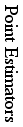
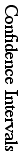
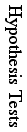
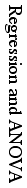

| Area | Date | Sections | Topic | Homework |
|---|
|  | 1/16 | 8.1, 8.2 | Sampling | worksheet #1 |
| 18 | 8.7 | Order Statistics | worksheet #2 |
| 23 | 10.1, 10.2 | Unbiasedness | 1-13 |
| 25 | 10.3 | Efficiency | 16, 21-28, 30, 31 |
| 28 | 10.3 | Cramer-Rao Inequality | 14, 15, 17-20 |
| 30 | 10.4 | Consistency | 33-37, 41 |
| 2/1 | 10.4 | Sufficiency | 42-46, 48, 49 |
| 4 | 10.7 | Method of Moments | 50-53, 55-58, 79-81, 83 |
| 6 | 10.8 | Maximal Likelihood | 59, 60, 62, 63, 66-68, 70-72 |
|  | 8 | 6.3 | Γ Distribution | worksheet #3 |
| 11 | 8.4 | χ2 Distribution | worksheet #4 |
| 13 | 8.5, 8.6 | t and F Distributions | worksheet #5 |
| 18 | 11.1, 11.2 | One Mean | 1-3, 6, 25, 31 |
| 20 | 11.3 | Two Means | 8, 9, 33, 35 |
| 22 | 11.4, 11.5 | Proportions | 11-16, 43, 45, 49 |
| 25 | 11.6 | One Variance | worksheet #6 |
| 27 | 11.7 | Two Variances | 18, 19, 57, 59 |
| 29 | | Midterm Project Reports | |
|  | 3/10 | 12.1, 12.2 | Hypothesis Testing | 3, 5-8, 30-33 |
| 12 | 12.6 | Likelihood Ratio Tests | 20-22, 24 |
| 14 | 13.2, 13.3 | Testing Means | 1, 2, 19, 24, 27, 29-31, 36, 40 |
| 17 | 13.4, 13.5 | Testing Variances, Proportions | 6, 7, 12, 13, 47-49, 53-55, 57, 59, 68, 70 |
| 19 | 13.7 | Contingency Tables | 8, 11, 73-78 |
| 24 | 13.8 | Goodness of Fit Tests | 16, 18, 80-83 |
| 26 | 16.1, 16.3 | Signed Rank Test | 2-4, 17, 19, 22 |
| 28 | 16.4, 16.5 | U Test and H Test | 5-9, 23-26 |
| 31 | 16.7 | Rank Correlation Coefficient | 15, 38-43 |
|  | 4/2 | 14.3 | Method of Least Squares | 13-16, 41-43 |
| 4 | 14.4 | Regression Analysis | 17-20, 51, 53, 54, 57, 59 |
| 7 | 14.5 | Correlation Analysis | 28, 29, 31, 65, 67, 72 |
| 11 | | Nonlinear Regression | worksheet #7 |
| 14 | 14.6 | Multiple Regression | 77, 79, 82, 98 |
| 16 | 15.1, 15.2 | One Way ANOVA | 1, 2, 6, 16-18 |
| 18 | 15.3, 15.4 | Two Way ANOVA | 8-10, 23-25 |
| 21 | 15.5 | Multiple Comparisons | 31-35 |
| 23 | 15.6 | Latin Square Designs | 14, 15, 38-40 |
| | 25 | | Final Project Reports | |
| 28 | | Final Project Reports | |
| 30 | | Final Project Reports | |
| 5/3 | | Final Exam | |